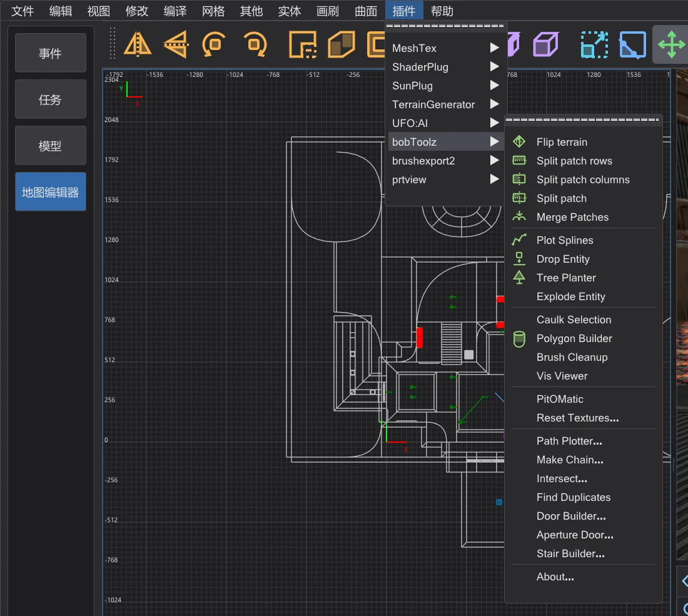
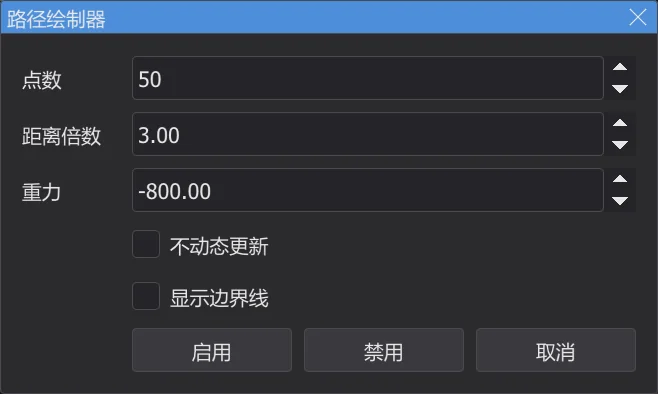
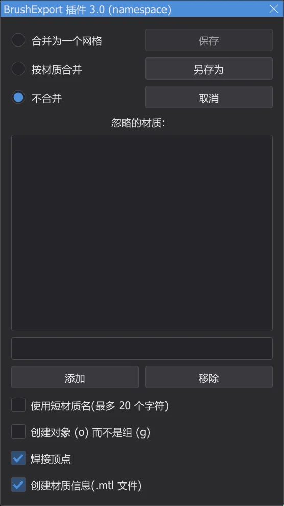
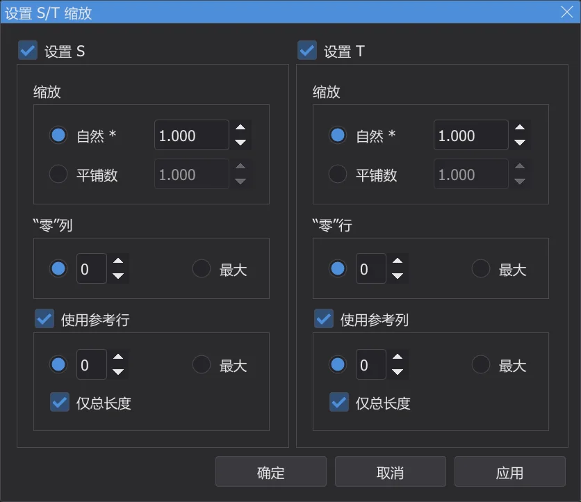

地图编辑器:插件
插件 菜单包含 NetRadiant-Custom 的全部插件——bobToolz、brushexport2、MeshTex、ShaderPlug、SunPlug、UFO:AI 和 prtview——以及它们所有的菜单项和对话框,均从源代码移植而来。
⟦插件⟧ 菜单#

菜单项保留插件在 NetRadiant-Custom 中的英文名称;对话框使用程序语言——开启 使用 NetRadiant 术语(英文) 时使用 NetRadiant-Custom 的英文。每个插件都有 About 项。消息显示在控制台中,错误为红色。插件所做的每一次修改都是一个撤销步骤。
bobToolz#
| 菜单项 | 作用 |
|---|---|
| Flip terrain | 两个选中的地形笔刷(有公共边的三棱柱):把它们的公共对角线翻转到另一方向。 |
| Split patch rows / columns、Split patch | 把选中的曲面片沿行、沿列或同时沿行和列切成条。 |
| Merge Patches | 把两个或更多有公共边的选中曲面片合并为一个。 |
| Plot Splines | 绘制 info_train_spline_main 链及其 info_train_spline_control 控制点构成的路径(见 Make Chain)。 |
| Tree Planter、Drop Entity | 选中地面笔刷并打开 Tree Planter:在 XY 视图中每次左键单击,都会把 data\karte\bt\tp_ent.txt 中定义的实体放到这些笔刷上,模型、角度和缩放随机(随附的文件写的是 Quake 的树木模型——请填入你自己的模型)。Drop Entity 让选中的实体落到同样的笔刷上。 |
| Explode Entity | 拆分选中的笔刷实体:它的每个笔刷都成为一个具有相同键值的独立实体(worldspawn 除外)。 |
| Caulk Selection | 给选中笔刷和曲面片的每个面赋予 caulk 纹理。 |
| Polygon Builder | 多边形生成器 对话框:把一个选中的笔刷变成指定边数的棱柱——可选空心带边框、反转、与上边对齐。 |
| Brush Cleanup | 删除地图中所有笔刷的无效平面和重复平面,并报告数量。 |
| Vis Viewer | 读取地图旁边编译好的 <地图>.bsp(编译之后,或 打开 .bsp 之后的原始文件),显示从摄像机或所选位置可以看到哪些 BSP 叶;BSP 叶节点 窗口列出它们。 |
| PitOMatic | 把一个选中的笔刷变成死亡深坑:坠落惨叫(*falling1.wav)和移除强化道具的触发器,底部一个 trigger_hurt。 |
| Reset Textures... | 纹理重置 对话框:替换纹理名称并重置缩放、偏移和旋转——作用于选中的或全部笔刷。 |
| Path Plotter... | 显示 trigger_push 的飞行轨迹——见下文。 |
| Make Chain... | 生成链条 对话框:生成一条带控制点的 info_train_spline_main 实体链,按基础名称命名。 |
| Intersect...、Find Duplicates | 选中彼此相交的笔刷(在整张地图中或在已选笔刷中,可选只选重复的),或选中与另一个笔刷完全重复的每个笔刷。 |
| Door Builder... | 把一个选中的笔刷变成两扇门(func_door),门和门框纹理来自 bt\door-tex*.txt,方向为南北或东西。 |
| Aperture Door... | 用选中的笔刷构建一扇光圈门(由多个扇片组成的虹膜)——根据参数或根据多边形轮廓。 |
| Stair Builder... | 把一个选中的笔刷变成楼梯:台阶高度、方向、样式(Original、Bob's Style、Corner Style)、主纹理和踢面纹理,可选细节笔刷。 |
Path Plotter
- 1
选中一个带有
target的trigger_push。 - 2
插件 > bobToolz > Path Plotter... 打开 路径绘制器:设置轨迹的点数、距离倍数和重力。启用 在二维视图和摄像机中绘制轨迹。

路径绘制器 对话框,数值与 NetRadiant-Custom 相同。 - 3
移动目标——轨迹会跟着变化,除非勾选了 不动态更新。禁用 移除轨迹。

brushexport2#

Export selected as Wavefront Object 把选中的笔刷写成 .obj 模型,例如在建模软件中继续制作。窗口中可以选择面的分组方式(合并为一个网格、按材质合并、不合并)、要排除的材质(忽略的材质:——例如 textures/common/caulk),以及是否缩短材质名、写出对象而不是组、焊接顶点、写出 .mtl 文件。另存为 询问文件名(第一次在设置文件夹中的 karte_export 文件夹中),保存 再次写入同一个文件。
MeshTex#

MeshTex 用于给曲面片(曲面、拱形、地形)贴纹理,适合表面检查器难以处理的情况。设置 S/T 缩放 设置沿 S 和 T 方向的缩放:自然缩放(与笔刷面相同,*)或平铺次数,从“零”列或“零”行开始计算,可选沿参考行或参考列测量。获取信息 显示选中曲面片的缩放,并可传给 设置 S/T 缩放。通用函数 把 S 和 T 设为行距与列距的线性函数。各 Align 项让纹理贴合曲面片的边缘(最小或最大、拉伸或收缩,或自动);Help... 显示 MeshTex 自带的说明。
ShaderPlug、SunPlug、UFO:AI、prtview#
| 插件 | 作用 |
|---|---|
| ShaderPlug | Create tag file 写出纹理浏览器的标签文件:每个着色器以其 .shader 文件名作为标签。纹理浏览器会立即重新加载(NetRadiant-Custom 要重启后才加载)。 |
| SunPlug | 在 NetRadiant-Custom 中它包含 ET-MapCoordinator:根据地图大小计算 Enemy Territory 指挥地图所用的 mapcoordsmins 和 mapcoordsmaxs,并用 设置 写入 worldspawn。Jedi Academy 不使用这些键。 |
| UFO:AI | 为游戏 UFO:AI 准备的工具:按其内容标志过滤(NoDraw、WeaponClip、ActorClip、StepOn、Level 1 到 8)、Perform check 以及它的 worldspawn 键(Worldspawn、Worldspawn reset)。之所以存在,是因为 NetRadiant-Custom 对每个游戏都显示它们。 |
| prtview | 显示上次 BSP 阶段的门户——见 地图编辑器:编译地图。 |